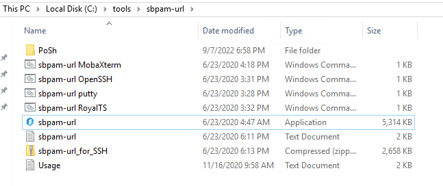
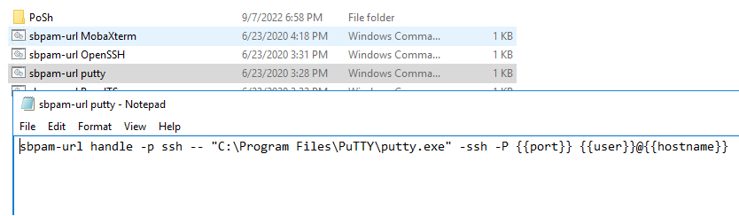
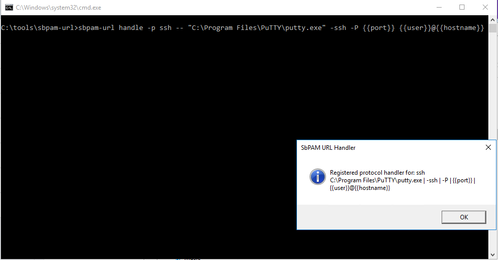
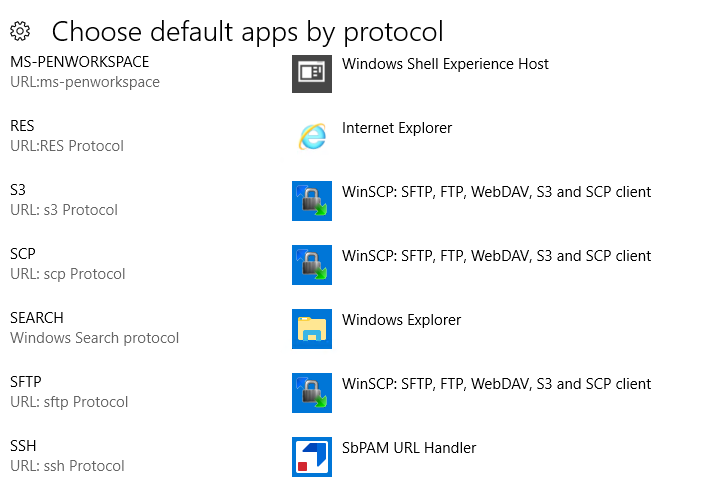

Summary
In order to automatically invoke a local SSH client for sessions, it is necessary to register a URL handler on your desktop. This article outlines how to configure this handler using "sbpam-url".
Instructions
1. Download a copy of the sbpam-url archive. Extract it to a specific static location on your file system (e.g., not "Desktop").
2. Ensure that your preferred SSH app (e.g., PuTTY) is installed and note its install location.
3. Right-click the windows command file corresponding to the application you wish to register, and ensure that it is configured with the correct install directory noted in the previous step. If it is not, edit the file with the correct path and save it.

4. Double-click the command file you previously opened and it will execute.

5. The command file will modify the registry and register the application to the URL handler. Your registered SSH client will now be invoked automatically when starting SSH sessions from the SbPAM user interface.
6. Note that your SSH handler should be indicated in Windows' "Choose default apps by protocol" settings as "SbPAM URL Handler"
